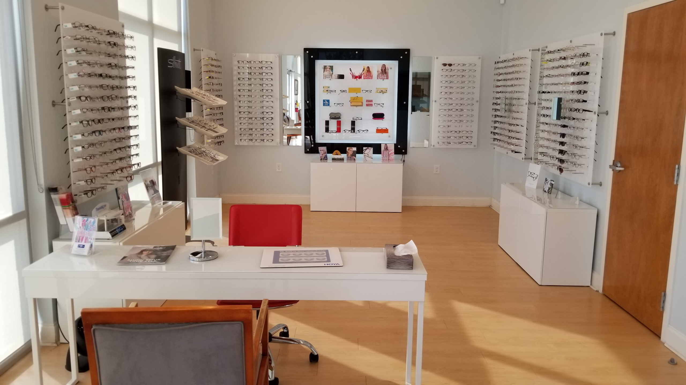

EYE MD
Medical and surgical treatment of eye disorders, including cataracts, glaucoma, dry eye, diabetic eye disease, and comprehensive ophthalmic care.

Doctors

Manan I. Shah, MD
Dr. Shah is originally from Tifton, Georgia. He earned his bachelor's degree at Emory University and his MD at Georgetown University School of Medicine. He completed ophthalmology residency at Loyola University Medical Center and a cornea fellowship at the University of Cincinnati.

Baltej Dhillon, MD
Dr. Dhillon earned his MD at the University of Central Florida College of Medicine and completed ophthalmology residency at Virginia Commonwealth University. He joined Eye MD in August 2025 and is fluent in Punjabi and Spanish.
Cataract Surgery
Cataracts are a common age-related change in the eye's natural lens. These short videos explain cataract surgery, how to prepare, and how lens replacement works.
Cataract Surgery Basics
Preparing for Surgery
Lens Replacement
Eye Care
Optical / Glasses
Eye MD of Winder has an on-site full-service optical shop with hundreds of frames, from affordable house brands to designer frames.
Licensed opticians can help select and adjust glasses to suit your prescription, visual needs, and daily activities.


Eye MD Surgery Center
Barrow County's first and only eye surgery center.
Cataract surgery and minimally invasive glaucoma surgery are available locally in Bethlehem.